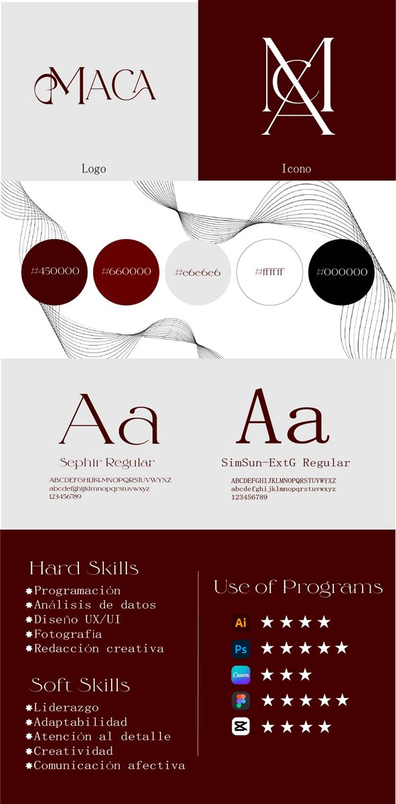

PROYECTOS
03 / 05
EDITORIAL
Ideas que toman forma
Diseño piezas editoriales que informan, inspiran y permanecen, combinando estética, jerarquía y narrativa visual.
Dirección: retícula, tipografía y jerarquía puestas al servicio del contenido.
Catálogo Numin
Ver PDF completo
1 /
Catálogo Numphar
1 /
Catálogo VMS
Ver PDF completo
1 /
Piezas editoriales
